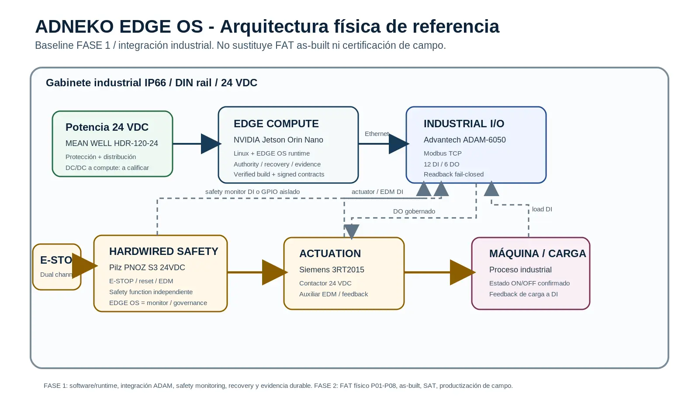
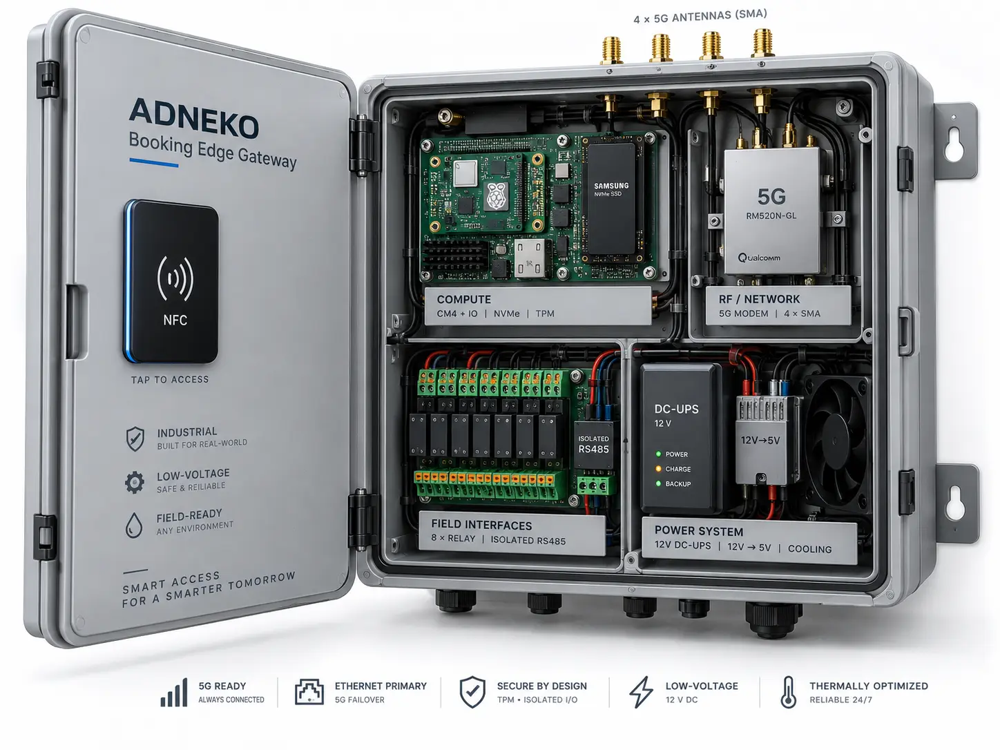

Dispositivos y sensores
Integra las fuentes físicas de información en la operación local.
Sistema operativo industrial para ejecutar capacidades ADNEKO cerca de máquinas, sensores y dispositivos físicos.
EDGE OS gestiona dispositivos, sensores, comunicaciones, seguridad y datos para ejecutar sistemas ADNEKO en el entorno edge. Contempla operación offline, sincronización, recuperación y auditoría.
Integra las fuentes físicas de información en la operación local.
Coordina el intercambio y tratamiento de información cerca de los equipos.
Permite continuidad local y sincronización cuando se restablece la conexión.
Controla y registra la actividad, con mecanismos de recuperación.
Referencias visuales de la plataforma y una aplicación especializada en entorno edge.


Material visual y arquitectónico de referencia. La configuración final depende del alcance industrial y operativo.
A partir del segundo año: US$3.000 / año.